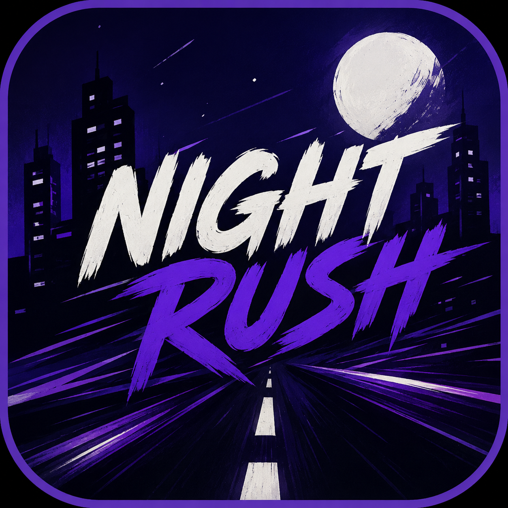

Informations du tournoi:
Téléchargements
Jouer en ligne

Repondre au sondage: clique ici
Comment installer ?
Windows
Téléchargez le jeu depuis ce site puis ouvrez-le.
Mac
Téléchargez le jeu depuis ce site, ouvrez le fichier .dmg puis faites glisser l'application dans le dossier Applications de votre Mac.
Android
Téléchargez le jeu depuis ce site puis ouvrez le fichier .apk. Si un avertissement apparaît, cliquez sur « Plus d'informations » puis « Installer quand même ».
iPhone
Téléchargez AltStore depuis https://altstore.io/download puis telechargez altstore classic. Ajoutez la source :
https://celtmen-cpu.github.io/Night-Rush/source.json
Installez AltServer sur PC/Mac, connectez votre Apple ID, puis installez Night Rush.
Activez le mode développeur si demandé. Renouvellement requis tous les 7 jours.
Créé avec ❤️ en 🇫🇷.